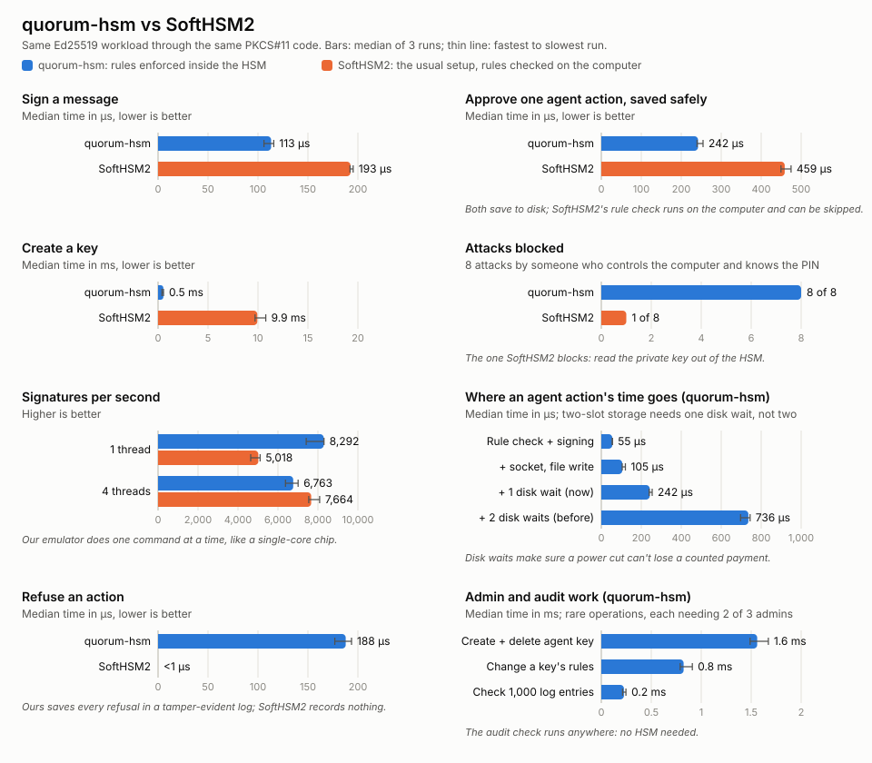

When an agent on your phone or laptop does something that matters (sends an email, pays for something, installs an update), it proves the action is genuine with a digital signature. Whoever holds the secret key behind that signature can act as your device. So the question I kept coming back to was simple: what stops the key from being used for the wrong thing?
The Weak Spot in a Normal HSM
Secret keys usually live in a Hardware Security Module (HSM). Think of a notary with an official stamp locked in a safe: you never get the stamp, you hand over a document and it comes back stamped. The stamp can't be copied out.
The catch is that a normal HSM stamps anything the computer in front of it asks for. Any rules ("only payments", "at most $50") are checked by software on that computer. If the computer is compromised, or the agent misbehaves, the attacker just skips the checks and asks the notary directly.
So I built a notary that checks the rules itself, inside the safe. The project is called quorum-hsm, it's written in Rust, and it runs on a $5 RP2350 board (Raspberry Pi Pico 2 or Seeed XIAO RP2350) or in an emulator on a laptop.
Rules That Travel With the Key
An agent key is created with its rules fixed: which kinds of action are allowed, the most a single payment can be, a total budget, and which actions need the user's OK. The agent doesn't hand over a blob of bytes to sign. It describes the action, and the HSM reads it, checks it, then writes and signs the statement itself, so what gets signed is always exactly what was checked.
Agent: "pay $35 to airline.example"
│
▼
HSM checks, in order: allowed kind? → under the per-payment limit? →
within budget? → user's OK needed? Is it genuine?
│
├─ any "no" → DENIED (nothing signed, nothing charged)
└─ all "yes" → record spending → sign the statement → APPROVEDTwo details matter more than they look. First, the HSM records the spending before it signs, so a crash or power cut can never produce a signature that wasn't counted. Second, the user's OK is real: their phone has its own key and signs a one-time code from the HSM together with the exact action, so an approval for $30 to the airline can't be replayed or moved to $49 for someone else.
Nobody Acts Alone
Rules inside the chip only help if nobody can quietly create a key with no rules. So creating, changing or deleting an agent key needs a quorum: at setup the HSM is given a list of admins and a threshold like "any 2 of these 3". Each admin's tool shows the exact rules in plain English before they sign, and the HSM verifies the signatures itself. Knowing the PIN isn't enough, and an approval for a $100 budget can't be reused for a $1,000,000 one.
- Birth certificates. Every agent key gets a certificate signed by the HSM's identity key: "key 1, with exactly these rules, was approved by Alice and Bob." A shop trusts the HSM once and can then check any agent key.
- No replays. Shops hand the agent a one-time code with an expiry. The HSM signs both into the approval, and a key's rules can require one.
- Rule changes can't reset a budget. Money already spent still counts, and every signed action carries a fingerprint of the rules it was approved under.
A Log Nobody Can Quietly Edit
The HSM keeps its own audit log: logins and wrong PINs, keys created and deleted, rule and admin changes, and every agent action, approved or refused, with the reason. Each entry is hashed into the next, and the HSM signs checkpoints of the chain. Edit, delete or reorder one entry and verification fails. A refused action is written down before the HSM answers "no", and if nobody collects the log the HSM stops working rather than lose evidence.
Attacking It on Purpose
Most of the work went into trying to break it:
- Glitches. Someone holding the device can disturb the chip's power or clock to flip one decision, like "over budget" becoming "fine". Every decision that leads to a signature, login or admin change is now made twice, by separate code; a test flips each of the nine decisions in turn to prove one glitch never gets a signature through.
- Power cuts. Flash must be erased before it's written, so state is saved to two slots and read back. A test cuts the power after every single byte of erasing and writing. The board always restarts with a valid state.
- Fuzzing. Six fuzz targets feed millions of random inputs and check invariants after every step. The fuzzer found a real bug within seconds: saved state with junk hidden in a label's padding was accepted. It's fixed and kept as a permanent regression test.
What It Costs
I benchmarked it against SoftHSM2, the standard open-source HSM, used the conventional way with the same rules checked on the computer. Same signature scheme (Ed25519), same message, same rule code. The only difference is where the check runs.

- 8 of 8 attacks blocked, against 1 of 8 for the conventional setup.
- A fully checked, double-checked, logged and safely saved agent action takes about 0.24–0.29 ms.
- Under load from up to 64 clients it handles about 3,500 saved payments a second. After 72,116 competing payments the spending counter was exact.
- Killed with
kill -9mid-traffic 25 times, it never handed out a signature it hadn't counted.
What still gets through
Of 20 further attacks, 15 were blocked, 2 were stopped by the receiving shop, 1 was detected, and 2 work. One is a known gap: restoring an old copy of the state undoes spending (rollback). The other was a new finding: someone with only the PIN can fill all 16 key slots so admins can't create agent keys. Flooding with the PIN also slows other clients 6–9x. These are on the to-do list, and the threat model says so plainly.
A lesson in measuring
My first PIN-timing test "found" a timing leak. It turned out to be measuring the order of the guesses, not the PIN. With the guesses shuffled, the difference vanished. It was a good reminder to try to disprove a result before believing it.
Try It
It speaks PKCS#11, so existing tools like pkcs11-tool work out of the box, and signatures verify with OpenSSL. The agent demo plays out a whole story (admins, rules, a shopping agent, shops and attacks) in one command:
./scripts/demo-agent.sh # an AI shopping agent: admins, rules, shops, attacks
./scripts/demo-board.sh # a brand-new board: provision it, use it, unplug it
./scripts/bench.sh # speed and attack comparison with SoftHSM2The code, threat model and full benchmark write-up are on GitHub: rachmurali02/agent-device-security.